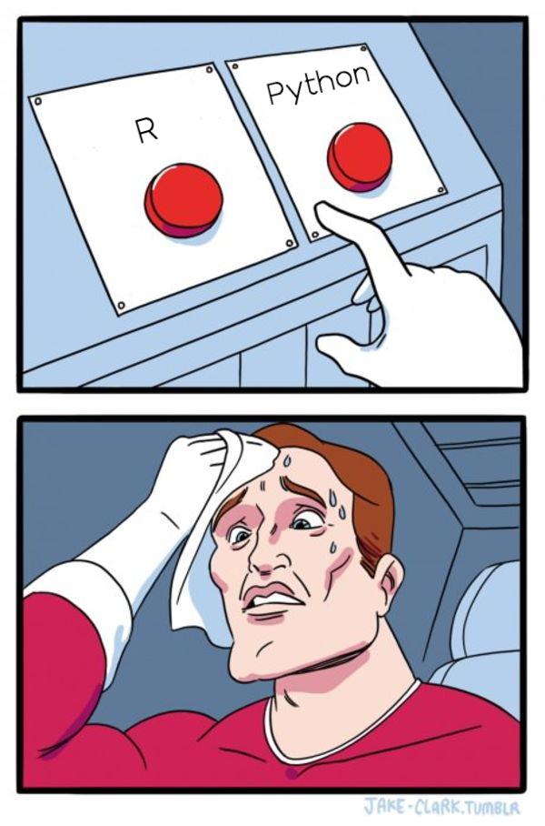

2 Modele z wieloma wyjściami
Modele z wieloma zmiennymi wynikowymi otwierają drzwi do głębokiego zrozumienia analizy statystycznej i uczenia maszynowego. Istotną motywacją dla zastosowania tych modeli jest potrzeba uwzględnienia jednoczesnego wpływu wielu czynników na zróżnicowane aspekty badanego zjawiska. W kontrze do tradycyjnych modeli, których celem jest prognozowanie jednej konkretnej zmiennej wynikowej, modele z wieloma zmiennymi pozwalają na kompleksową analizę systemów, w których wiele współzależnych zmiennych kształtuje końcowy rezultat.
Te modele znajdują zastosowanie zwłaszcza w sytuacjach, w których badane zjawisko jest wielowymiarowe, a jednoczesne oddziaływanie wielu czynników jest istotne. W dziedzinach takich jak badania społeczne czy ekonomiczne, gdzie liczne zmienne wpływają na dane zjawisko, modele z wieloma zmiennymi pozwalają na bardziej holistyczne zrozumienie tych interakcji. Różnicą kluczową w porównaniu do modeli jednowymiarowych jest zdolność modeli z wieloma zmiennymi do równoczesnego uwzględniania wielu aspektów, co umożliwia bardziej kompleksowe oddanie struktury rzeczywistości. Wartość dodana tych modeli kryje się w ich zdolności do precyzyjnego modelowania bardziej złożonych relacji między zmiennymi, co staje się niezbędne w obliczu rosnącej ilości dostępnych danych oraz potrzeby dokładniejszego zrozumienia skomplikowanych struktur zjawisk.
Jednym z przykładów wykorzystania modeli z wieloma zmiennymi na wyjściu może być prognozowanie wyników finansowych przedsiębiorstwa. W tym przypadku, zamiast koncentrować się wyłącznie na jednym wskaźniku, takim jak zysk netto, model z wieloma zmiennymi uwzględniałby różnorodne czynniki wpływające na kondycję finansową firmy. Wskaźniki takie jak przychody, koszty operacyjne, inwestycje kapitałowe, oraz czynniki makroekonomiczne mogą stanowić zbiór zmiennych wynikowych. Model taki pozwalałby na holistyczną analizę wpływu różnych czynników na zdolność przedsiębiorstwa do generowania zysku, dostarczając bardziej kompleksowych prognoz i lepszych narzędzi do podejmowania decyzji strategicznych.
Stosowanie oddzielnych modeli dla każdej zmiennej wynikowej, zwłaszcza w przypadku złożonych systemów czy wielowymiarowych danych, może prowadzić do suboptymalnych rezultatów i utrudniać skuteczne modelowanie rzeczywistych zależności między zmiennymi. Taka strategia może nie uwzględniać skomplikowanych relacji między poszczególnymi zmiennymi, co prowadzi do niepełnego zrozumienia struktury danego zjawiska. Ponadto, prowadzi to do redundancji w procesie uczenia, gdzie modele nie wykorzystują informacji zawartej w innych zmiennych, co ogranicza ich zdolność do trafnej prognozy. Zastosowanie jednego modelu z wieloma zmiennymi wynikowymi pozwala na uwzględnienie wzajemnych interakcji między zmiennymi, co skutkuje bardziej kompleksowym i precyzyjnym modelem, zdolnym lepiej odzwierciedlić złożoność analizowanego systemu.
W kontekście prognozowania wyników finansowych przedsiębiorstwa, użycie oddzielnych modeli dla każdej zmiennej wynikowej, takiej jak przychody, koszty operacyjne czy inwestycje kapitałowe, mogłoby prowadzić do ograniczonej perspektywy i niewłaściwej oceny sytuacji finansowej firmy. Oddzielne modele dla poszczególnych wskaźników mogą nie uwzględniać skomplikowanych wzajemnych relacji między tymi zmiennymi, co wprowadzałoby niedokładności w prognozach. Na przykład, wzrost kosztów operacyjnych może być związany z równoczesnym wzrostem przychodów, co niekoniecznie wynikałoby z oddzielnej analizy tych zmiennych. Korzystanie z jednego modelu uwzględniającego wszystkie te zmienne pozwala na bardziej holistyczną ocenę sytuacji finansowej, umożliwiając identyfikację ukrytych zależności i skomplikowanych interakcji między poszczególnymi aspektami działalności przedsiębiorstwa. Dzięki temu podejściu możliwe jest dostarczenie bardziej precyzyjnych prognoz, co jest kluczowe dla skutecznego zarządzania finansami i podejmowania strategicznych decyzji.
2.1 Typy modeli z wieloma zmiennymi wynikowymi
Wśród nadzorowanych modeli uczenia maszynowego z wieloma zmiennymi wynikowymi można wymienić zarówno te dedykowane do klasyfikacji, jak i regresji. Modele te są znane jako modele z wieloma wyjściami (klasyfikacyjne) lub modele z wieloma wyjściami (regresyjne), w zależności od rodzaju problemu, który rozwiązują.
Modele z wieloma wyjściami (klasyfikacyjne)
W przypadku klasyfikacji, gdy mamy wiele kategorii (klas) jako zmienną wynikową, modele te są nazywane modelami z wieloma wyjściami. Przykłady obejmują algorytmy takie jak regresja logistyczna, metoda k najbliższych sąsiadów (k-NN) czy algorytmy drzew decyzyjnych, które zostały dostosowane do obsługi wielu klas.
Przykładowe zadanie: Załóżmy, że mamy zbiór danych dotyczący różnych rodzajów owoców (np. jabłek, pomarańczy, bananów) i chcemy stworzyć model, który jednocześnie przewiduje gatunek owocu oraz kolor owocu. Mamy więc dwie zmienne wynikowe: gatunek (klasyfikacja wieloklasowa) i kolor (klasyfikacja wieloklasowa).
Modele z wieloma wyjściami (regresyjne).
W przypadku regresji, gdzie zmienną wynikową jest wektor wartości numerycznych, modele te są nazywane modelami z wieloma wyjściami. Przykłady obejmują algorytmy regresji liniowej lub nieliniowej, algorytmy oparte na drzewach decyzyjnych, czy też bardziej zaawansowane modele, takie jak sieci neuronowe.
Przykładowe zadanie: Zakładamy, że mamy zbiór danych zawierający informacje o pracownikach, takie jak doświadczenie zawodowe, poziom wykształcenia, liczba godzin pracy tygodniowo itp. Chcemy stworzyć model, który jednocześnie przewiduje zarobki pracowników oraz ich poziom satysfakcji zawodowej.
Modele wielozadaniowe.
Modele wielozadaniowe to rodzaj nadzorowanego uczenia maszynowego, w którym model jest trenowany jednocześnie do rozwiązania kilku zadań. Te zadania mogą obejmować zarówno klasyfikację, jak i regresję. Dzięki wspólnemu trenowaniu modelu na wielu zadaniach, można uzyskać korzyści w postaci wspólnego wykorzystywania wiedzy między zadaniami.
Przykładowe zadanie: Załóżmy, że mamy zbiór danych dotyczący zakupów klientów w sklepie internetowym. Dla każdego klienta mamy informacje o różnych aspektach zakupów, takich jak czas dostawy, łatwość obsługi strony, jakość produktów itp. Chcemy stworzyć model, który jednocześnie przewiduje dwie zmienne wynikowe: jakość obsługi klienta (skala jakościowa, np. “Niska”, “Średnia”, “Wysoka”) oraz całkowity wydatek klienta (zmienna ilościowa, np. kwota zakupów).
Modele hierarchiczne.
W niektórych przypadkach, szczególnie gdy mamy hierarchię zmiennych wynikowych, modele te mogą być budowane w sposób hierarchiczny. Przykładowo, w problemie klasyfikacji obrazów z hierarchią kategorii (na przykład rozpoznawanie gatunków zwierząt), model może być zaprojektowany do rozpoznawania zarówno ogólnych, jak i bardziej szczegółowych kategorii.
2.2 Różnie podejścia do modelowania z wieloma wyjściami
Istnieją dwa ogólne podejścia do rozwiązywania problemów wieloetykietowych: transformacja problemu i adaptacja algorytmu. Transformacja problemu polega na manipulowaniu zbiorem danych w taki sposób, że problem wieloetykietowy staje się jednym lub kilkoma problemami jednoetykietowymi (Tawiah i Sheng 2013). Adaptacja algorytmu polega na tym, że sam algorytm jest w stanie poradzić sobie bezpośrednio z problemem wieloetykietowym. Okazuje się, że wiele, choć nie wszystkie, metody adaptacji algorytmów metod adaptacji algorytmów w rzeczywistości wykorzystuje transformację problemu (Tsoumakas i Katakis 2007).
2.2.1 Transformacja problemu
Techniki te przewidują stworzenie indywidualnego modelu dla każdego celu, a następnie połączenie oddzielnych modeli w celu uzyskania ogólnej prognozy. Metody transformacji problemów okazały się lepsze od metod adaptacji algorytmów pod względem dokładności (Spyromitros-Xioufis i in. 2016). Co więcej, podstawowa zasada sprawia, że metody transformacji problemu są niezależne od algorytmu. W konsekwencji, można je łatwo dostosować do danego problemu poprzez zastosowanie odpowiednich bazowych metod uczących. Punkt ten ma również szczególne znaczenie dla modeli typu ensemble, które łączą oszacowania z wielu potencjalnie różnych algorytmów w ostateczną prognozę. Niedawno Spyromitros-Xioufis i in. (2016) zaproponowali rozszerzenie znanych metod transformacji klasyfikacji wieloetykietowej, aby poradzić sobie z problemem regresji wielowynikowej i modelować zależności między celami. W szczególności wprowadzili oni dwa nowe podejścia do regresji wielocelowej, składanie regresorów wielocelowych i łańcuchy regresorów, inspirowane popularnymi i skutecznymi podejściami do klasyfikacji wieloznaczeniowej.
Podstawową koncepcją w metodach transformacji problemów jest wykorzystanie poprzednich modeli do nowego przewidywania poprzez rozszerzoną przestrzeń cech (Borchani i in. 2015). Stacked generalization to podejście do meta-uczenia, które wykorzystuje dane wyjściowe wcześniej wyuczonych modeli do uczenia się nowego modelu. W związku z tym początkowe dane wyjściowe modelu są traktowane jako nowe cechy i są układane w stos do początkowego wektora cech przed ponownym uczeniem. W oryginalnym sformułowaniu przewidziano tylko dwuetapową procedurę, tj. początkowe modele wyuczone z początkowego wektora cech odpowiadają odpowiednio modelom i danym poziomu 0, a powiększony wektor cech i ponownie wyuczony model są określane odpowiednio jako dane poziomu 1 i generalizator. Jednakże, rozsądnie rzecz biorąc, ten proces układania pojedynczego celu (ang. Single-target Stacking - STS) może być również przeprowadzany w wielu iteracjach. Aby wdrożyć tę zasadę dla problemów z wieloma celami, w których kodowane są również możliwe korelacje między zmiennymi docelowymi, wprowadzono koncepcję układania wielu celów (ang. Multi-target Stacking - MTS) (Borchani i in. 2015). Analogicznie do STS, szkolenie modelu MTS można uznać za procedurę dwuetapową. W pierwszym etapie uczone są niezależne modele dla każdej zmiennej docelowej. Następnie uczone są meta-modele dla każdej zmiennej docelowej z rozszerzonymi wektorami cech, które zawierają początkowe wektory cech, a także oszacowania poziomu 0 pozostałych zmiennych docelowych. Podobne pomysły były również stosowane w kontekście modeli zespołowych, tj. uczenia się kilku modeli poziomu 0 dla każdej zmiennej docelowej, które są łączone w procedurze uogólniania poziomu 1 dla wielu zmiennych docelowych (Santana i in. 2020).
2.2.1.1 Single-target stacking
Metoda ta jest stosowana przede wszystkim z zadaniach regresyjnych z wieloma wyjściami. Rozważmy zbiór danych \(D = \left\{\left(\mathbf{x}^{(1)}, \mathbf{y}^{(1)}\right), \ldots, \left(\mathbf{x}^{(N)}, \mathbf{y}^{(N)}\right)\right\}\), składający się z \(N\) obserwacji, które są realizacjami zmiennych losowych \(X_1,\ldots,X_m, Y_1,\ldots,Y_d\). Zatem każde wejście do modelu jest charakteryzowane przez \(m\) zmiennych \(\mathbf{x}{(l)}=\left(x_1^{(l)},\ldots, x_j^{(l)}, \ldots, x_m^{(l)} \right)\) oraz \(d\) odpowiadających im wyjść \(\mathbf{y}{(l)}=\left(y_1^{(l)},\ldots, y_i^{(l)}, \ldots, y_d^{(l)} \right)\), gdzie \(l\in\{1,\ldots,N\}, j\in\{1,\ldots,m\}, i\in\{1,\ldots,d\}\). Naszym celem w zadaniu regresyjnym (MTR - Multi-target Regression) jest nauczenie takiego modelu \(h\), który przekształca \(\mathbf{x}\) w \(\mathbf{y}\).
W podejściu STS w pierwszym kroku budowanych jest \(d\) niezależnych modeli przewidujących pojedyncze wyjście. Po tej czynności meta-model jest trenowany na zbiorze \(D_i'\), który jest wzbogaconym zbiorem \(D_i\) o predykcje zmiennej \(Y_i\), czyli
\[ D_i'=\left\{\left(\mathbf{x}'^{(1)}, \mathbf{y}_i^{(1)}\right), \ldots, \left(\mathbf{x}'^{(N)}, \mathbf{y}_i^{(N)}\right)\right\}, \]
gdzie \(\mathbf{x}'^{(l)} =\left(x_1^{(l)},\ldots, x_m^{(l)}, \hat{y}_i^{(l)} \right)\). W zależności czy rozpatrujemy algorytm STS niekumulatywny, czy kumulatywny, drugi krok iteracji wygląda nieco inaczej:
niekumulatywny
\[ \bar{D}_i''=\left\{\left(\mathbf{x}''^{(1)}, \mathbf{y}_i^{(1)}\right), \ldots, \left(\mathbf{x}''^{(N)}, \mathbf{y}_i^{(N)}\right)\right\}, \]
gdzie \(\mathbf{x}''^{(l)} =\left(x_1^{(l)},\ldots, x_m^{(l)}, \hat{y}_i'^{(l)} \right)\)
kumulatywny
\[ \bar{\bar{D}}_i''=\left\{\left(\mathbf{x}''^{(1)}, \mathbf{y}_i^{(1)}\right), \ldots, \left(\mathbf{x}''^{(N)}, \mathbf{y}_i^{(N)}\right)\right\}, \]
gdzie \(\mathbf{x}''^{(l)} =\left(x_1^{(l)},\ldots, x_m^{(l)}, \hat{y}_i^{(l)},\hat{y}_i'^{(l)} \right)\).

2.2.1.2 Multi-target stacking
W przeciwieństwie do STS, MTS został zaprojektowany do dzielenia się wiedzą w skorelowanych zmiennych docelowych w ramach procedury łączenia w stosy. Podobnie, najpierw uczone są modele pojedynczego celu. Następnie tworzony jest zestaw meta-modeli, które zawierają model dla każdej zmiennej docelowej \(Y_i,\) \(i \in \{1, \ldots, d\}\). W ten sposób uwzględniane są szacunki dotyczące pozostałych zmiennych docelowych z pierwszego etapu, tj. model jest uczony z przekształconego zbioru
\[ D_i'=\left\{\left(\mathbf{x}'^{(1)}, \mathbf{y}_i^{(1)}\right), \ldots, \left(\mathbf{x}'^{(N)}, \mathbf{y}_i^{(N)}\right)\right\}, \]
gdzie \(\mathbf{x}'^{(l)} =\left(x_1^{(l)},\ldots, x_m^{(l)}, \hat{y}_1^{(l)},\ldots,\hat{y}_d^{(l)} \right)\). W metodzie MTS istnieją również dwa sposoby składania kolejnych iteracji. Przebiegają one w podobny sposób jak w przypadku STS.

Istnieje jeszcze trzecia metoda powszechnie stosowana do predykcji wielowyniowej zwana Regressor Chains lub Classifier Chains w zależności od celu zadania. Idę działania tej metody przedstawię na przykładzie modelu regresyjnego.
2.2.1.3 Regressor Chains
RC opierają się na idei dopasowywania modeli pojedynczego celu wzdłuż wybranej permutacji, tj. łańcucha. Najpierw losowana jest permutacja w odniesieniu do zmiennych docelowych. Proces ten można przeprowadzić w sposób losowy (Spyromitros-Xioufis i in. 2016) lub uporządkowany (Melki i in. 2017). Wybrana permutacja jest wykorzystywana do zbudowania oddzielnego modelu regresji dla zmiennych docelowych zgodnie z kolejnością permutacji. Aby wykorzystać tę strukturę do MTR, rzeczywiste wartości zmiennych docelowych są dostarczane do kolejnych modeli podczas uczenia się wzdłuż łańcucha. Na podstawie pełnego łańcucha lub wybranego zestawu \(C = (Y_1,\ldots,Y_d)\), pierwszy model jest ograniczony do ustalenia predykcji dla \(Y_1\). Następnie, kolejno dla \(Y_i\) uczone są modele na podstawie zbioru
\[ D_i'=\left\{\left(\mathbf{x}'^{(1)}, \mathbf{y}_i^{(1)}\right), \ldots, \left(\mathbf{x}'^{(N)}, \mathbf{y}_i^{(N)}\right)\right\}, \]
gdzie \(\mathbf{x}'^{(l)} =\left(x_1^{(l)},\ldots, x_m^{(l)}, y_1^{(l)},\ldots, y_{i-1}^{(l)} \right)\). Ten algorytm ma również dwie odmiany (niekumulatywną i kumulatywną) w zależności od kształtu kolejnych iteracji.

Ponieważ, jak można się spodziewać wyniki modelowania w znaczny sposób zależą od wylosowanej permutacji, to w metodzie zaproponowanej przez Melki i in. (2017) aby uniknąć tego efektu buduje się \(k\) modeli dla różnych permutacji i łączy się wyniki w podobny sposób jak w lasach losowych.

Słowo komentarza jeśli chodzi o dostępność tych metod w językach programowania. Niestety wspomniane metody w R nie są zaimplementowane w sposób, który pozwalałby na bezpieczne używanie przygotowanych rozwiązań. Istnieje kilka wzmianek (na dzień dzisiejszy, czyli początek 2024 roku) na ten temat. Twórcy dwóch głównych frameworków do uczenia maszynowego, czyli mlr3 oraz tidymodels przygotowują implementacje tych metod. Dodatkowo istnieje rozwiązanie w wersji eksperymentalnej mtr-toolkit, które pozwala na wykonanie modelowania z wieloma wyjściami, którym można się posiłkować. Na potrzeby klasyfikacji istnieje również pakiet mldr i ultim, które pozwalają na uczenie modeli klasyfikacyjnymi z wieloma wyjściami.
Niestety w przypadku Python-a nie jest dużo lepiej. Wprawdzie w pakiecie scikit-learn istnieją implementacje pozwalające na predykcje wielowyjściowe w obu typach zadań poprzez MultiOutputRegressor i MultiOutputClassifier, ale dokonują one predykcji naiwnej poprzez złożenie w listę wyników pojedynczych modeli dla każdej zmiennej. Nieco lepiej sprawa wygląda w przypadku metod łańcuchowych, ponieważ zarówno dla klasyfikacji, jak i regresji są metody to realizujące (ClassifierChain i RegressorChain).
2.2.2 Adaptacja algorytmu
Prostota podejścia transformacji problemu sprawia, że jest ono odpowiednie dla problemów, w których jego wady mają niewielki lub żaden wpływ - jednak dla złożonych problemów podejście adaptacji algorytmu może okazać się bardziej efektywne. Dodatkowo, dowody empiryczne sugerują, że uczenie się powiązanych zadań jednocześnie, a nie niezależnie, może poprawić wyniki predykcyjne (Evgeniou i Pontil 2004). Z drugiej strony, jeśli zadania są bardzo odmienne, wydajność predykcyjna może ucierpieć, gdy zadania są uczone razem, a nie niezależnie (Faddoul i in. 2010). W związku z tym możemy wyciągnąć następujące wnioski:
- jeśli zadania, których nasz predyktor ma się nauczyć, są powiązane, powinniśmy dążyć do znalezienia odpowiedniej metody adaptacji algorytmu;
- jeśli zadania, których chcemy się nauczyć, nie są powiązane, powinniśmy zamiast tego dążyć do znalezienia odpowiedniej metody transformacji problemu.
Wreszcie, powinniśmy wziąć pod uwagę rozmiar problemu i zdać sobie sprawę, że gdy zadania są niepowiązane, istnieje potencjalny kompromis między efektywnością czasową a wydajnością predykcyjną przy wyborze metody transformacji problemu lub metody adaptacji algorytmu. W przypadku niepowiązanych ze sobą zadań, metody transformacji problemu mogą zwiększać skuteczność predykcyjną, ale zmniejszać wydajność czasową w przypadku dużych problemów i odwrotnie.
Niestety tej metody nie da się zastosować do każdego typu modelu. Rodzina modeli, których adaptacja jest wykonana cały czas rośnie. Adaptacja modelu polega na przekształceniu go do postaci, w której da się wykonać predykcję dla wielu wyjść. Wśród modeli, których wersje native multi-target istnieją należy wymienić:
- regresja wieloraka (Izenman 1975)
- kNN
- drzewo decyzyjne (Struyf i Džeroski 2006)
- las losowy (Kocev i in. 2013)
- bagging (Kocev i in. 2013)
- gradient boosting (Zhang i Jung, b.d.; Faddoul i in. 2012)
- SVM (Xu, Guo, i Wang 2013; Vazquez i Walter 2003)
- no i oczywiście sieci neuronowe.
Nie sposób przedstawić w jaki sposób wprowadzone zostały zmiany we wszystkich algorytmach. Skupię się jednak na pokazaniu adaptacji drzew decyzyjnych do predykcji wielu wyjść jednocześnie, ponieważ jest to meta-model modeli takich jak lasy losowe, bagging czy boosting.
2.2.2.1 Adaptacja klasyfikacyjnego drzewa decyzyjnego
Faddoul i in. (2012) zaproponowali zmodyfikowaną wersję algorytmu drzewa decyzyjnego C4.5 (Quinlan 1993), która bezpośrednio obsługuje problemy klasyfikacji wielowyjściowej. Zmodyfikowana wersja (nazwana MT-DT) różni się od standardowej implementacji C4.5 w dwóch krytycznych aspektach: kryteriach podziału węzłów i procesie decyzyjnym. Faddoul i in. (2012) proponują trzy różne podejścia do łączenia wielu miar przyrostu informacji w jedną miarę: wspólny przyrost informacji, suma nieważona i maksymalny przyrost informacji. Wspólny przyrost informacyjny jest definiowany przy użyciu konkatenacji wszystkich poszczególnych zadań, tj. względnej różnicy w entropii mierzonej we wszystkich zadaniach decyzyjnych. Autorzy pokazują, że nieważona suma (Równanie 2.1) indywidualnych przyrostów informacyjnych wszystkich zadań jest równoważna wspólnemu przyrostowi informacyjnemu.
\[ IG_U=\sum_YIG_Y \tag{2.1}\]
Maksymalny przyrost informacyjny, zgodnie z propozycją autorów jest definiowany po prostu jako maksymalny przyrost informacyjny wszystkich zadań:
\[ IG_M=\max_YIG_Y \tag{2.2}\]
Badania eksperymentalne pokazały, że maksymalny przyrost informacyjny wykorzystany do budowania reguł podziału, charakteryzuje się wyższym poziomem dopasowania modeli, niż przy zastosowaniu \(IG_U\) i \(IG_J\).
W przypadku klasyfikacji z jedną etykietą, algorytm indukcji drzewa decyzyjnego (taki jak C4.5) rekurencyjnie dzieli węzły, dodając (zazwyczaj dwa) elementy potomne, aż możliwe jest utworzenie liścia takiego, że znaczna większość (lub nawet wszystkie) jego przykładowych instancji należy do tej samej klasy. W przypadku wielu wyjść, indukcja drzewa niekoniecznie jest tak prosta. Rozważmy problem klasyfikacji wielowyjściowej z dwoma wyjściami binarnymi \(\nu_1\) i \(\nu_2\); możliwe jest, że po \(t\) podziałach, węzeł zawiera tylko wartości pozytywne dla \(\nu_1\), ale mieszankę wartości pozytywnych i negatywnych dla \(\nu_2\) - stąd, podczas konstruowania drzew decyzyjnych dla wielu jednoczesnych zadań, należy pamiętać, że proces decyzyjny dla pewnego zadania może wymagać krótszej ścieżki decyzyjnej niż inne zadania w ramach tego samego problemu wielowyjściowego. MT-DT radzi sobie z tym, sprawdzając w każdym węźle, czy możliwe jest utworzenie węzła terminalnego dla któregokolwiek z zadań - w powyższym przykładzie spowodowałoby to utworzenie drzewa, w którym wewnętrzny węzeł \(t_1\) jest oznaczony jako węzeł zatrzymania dla \(\nu_1\), oznaczony klasą pozytywną. Ponieważ celem jest prognozowanie dla obu wyjść binarnych, \(t_1\) nie jest węzłem liścia - zamiast tego rekurencyjne dzielenie jest kontynuowane od \(t_1\), aż do znalezienia węzła \(t_2\) takiego, że \(t_2\) jest wystarczająco czysty w odniesieniu do \(\nu_2\), aby można było utworzyć regułę klasyfikacji dla drugiego zadania binarnego. W tym momencie węzły decyzyjne (węzły wewnętrzne lub liście) zostały znalezione dla wszystkich wyników (\(\nu_1\) i \(\nu_2\)), a algorytm indukcji drzewa rekurencyjnego może zostać zakończony.
Nic dziwnego, że klasyfikacja przy użyciu już zbudowanego modelu MT-DT przebiega według tej samej formuły, co jego indukcja - podczas przechodzenia przez drzewo każdy węzeł jest sprawdzany w celu ustalenia, czy można podjąć decyzję dla któregokolwiek z aktualnie nierozstrzygniętych zadań. W przykładzie \(\nu_1\), \(\nu_2\), klasyfikacja zostanie dokonana dla \(\nu_1\) w węźle \(t_1\), ponieważ jest on oznaczony jako węzeł zatrzymania dla \(\nu_1\); następnie przejście jest kontynuowane do momentu napotkania \(t_2\) i klasyfikacja może zostać dokonana dla \(\nu_2\). W tym momencie wszystkie wyjścia zostały sklasyfikowane, a przechodzenie może się zakończyć, zwracając dwie wartości w \(t_1\) i \(t_2\) jako klasyfikacje odpowiednio dla \(\nu_1\) i \(\nu_2\).
2.2.2.2 Adaptacja regresyjnego drzewa decyzyjnego
Segal (1992) zaproponował rozwiązanie dla drzew regresyjnych o wielu wyjściach (MRT), które są w stanie przewidywać wyniki dla wielu powiązanych zadań regresyjnych; te wielowyjściowe drzewa regresyjne są oparte na funkcji podziału najmniejszych kwadratów zaproponowanej w ramach CART (Breiman i in. 2017). W przypadku drzewa regresyjnego o jednej odpowiedzi celem jest minimalizacja następującej funkcji celu:
\[ \phi(t) = SS(t)-SS(t_L)-SS(t_R) \]
gdzie \(SS(t)\) jest zdefiniowana następująco
\[ SS(t) = \sum_{i\in t}(y_i-\bar{y}(t))^2. \]
Segal (1992) dodał ważenie macierzą kowariancji do błędu kwadratowego, co prowadzi algorytm drzewa do tworzenia węzłów potomnych, które reprezentują jednorodne klastry w odniesieniu do zestawu odpowiedzi wyjściowych:
\[ SS(t) = \sum_{i\in t}(y_i-\bar{y}(t))'V^{-1}(t)(y_i-\bar{y}(t)), \]
gdzie \(V(t)\) oznacza macierz kowariancji w węźle \(t\).
2.2.2.3 Adaptacja drzew decyzyjnych do realizacji obu zadań
Jak wspomniano wcześniej, jedną z kluczowych motywacji do podejmowania prób rozwiązywania problemów rozpoznawania wzorców z wieloma wyjściami przy użyciu metod adaptacji algorytmów jest oczekiwanie, że pojedynczy model wytrenowany na zestawie powiązanych zadań wykaże poprawę wydajności predykcyjnej w porównaniu do zestawu indywidualnych modeli, z których każdy został wytrenowany na pojedynczym zadaniu. Rodzi to pytanie: co jeśli problem wielowynikowy zawiera zarówno zadania klasyfikacji, jak i regresji? Jeśli zadania są niepowiązane, rozwiązanie takiego wspólnego problemu klasyfikacyjno-regresyjnego nie musi być trudniejsze niż szkolenie zestawu klasyfikatorów i regresorów dla poszczególnych zadań; jeśli jednak zadania są powiązane, oczekujemy, że metoda adaptacji algorytmu zapewni lepsze wyniki pod względem wydajności predykcyjnej.
Glocker i in. (2012) zaproponował algorytm indukcji drzewa, który jednocześnie rozwiązuje jedno zadanie klasyfikacji i jedno zadanie regresji. Podobnie jak MT-DT i MRT, wspólne drzewo klasyfikacyjno-regresyjne (JCRT) rozwiązuje wiele jednoczesnych zadań predykcji poprzez modyfikację funkcji podziału węzła w kroku indukcyjnym i oznaczenie węzłów końcowych odpowiednimi wartościami dla każdego zadania. Ze względu na charakter wspólnych problemów klasyfikacyjno-regresyjnych, zmodyfikowana funkcja podziału jest wymagana do jednoczesnego uwzględnienia błędu zarówno części klasyfikacyjnej, jak i regresyjnej. Funkcja podziału zaproponowana przez Glocker i in. (2012) wykorzystuje funkcję entropii składającą się z trzech części:
- po pierwsze, entropia Shannona jest obliczana dla części klasyfikacji;
- po drugie, ważona entropia różnicowa jest obliczana dla części regresji;
- po trzecie, ze względu na fakt, że entropia Shannona i entropia różnicowa istnieją w różnych zakresach, stosuje się krok normalizacji w celu połączenia dwóch entropii. Entropia Shannona jest obliczana tak, jak opisano wcześniej:
\[ H_c(t) = \sum_{c\in C}p(c|x)\log p(c|x). \]
Miara entropii różniczkowej stosowana przez Glocker i in. (2012) dla regresyjnej części problemu jest obliczana w podobny sposób, z dwiema kluczowymi różnicami:
- zamiast sumowania prawdopodobieństw wartości nominalnych, entropia jest definiowana przez różniczkę funkcji prawdopodobieństwa wyjścia o wartości rzeczywistej;
- dodatkowo funkcja prawdopodobieństwa jest ważona w klasach:
\[ H_{r|c}(t) = \sum_{c\in C}p(c|x)\int_{r\in \mathbb{R}^n}-p(r|c,x)\log p(r|c,x)dr. \]
Następnie dokonywana jest normalizacja ze względu na oba zadania, gdzie punktem odniesienie jest entropia w korzeniu:
\[ H(t) = \frac12\left(\frac{H_c(t)}{H_c(t_0)}+\frac{H_{r|c}(t)}{H_{r|c}(t_0)}\right). \]
Jedyne implementacje, które znalazłem dla obu języków programowania (R i Python) dotyczyły lasów losowych. W R pakiet nazywa się randomForestSRC, a w Pythonie morfist. Pozwalają one zarówno na wykonywanie wielowyjściowych zadań klasyfikacyjnych i regresyjnych, jak również zadań mieszanych. Oczywiście wspomniane wyżej typy zadań można realizować przy użyciu sieci neuronowych w obu językach programowania.